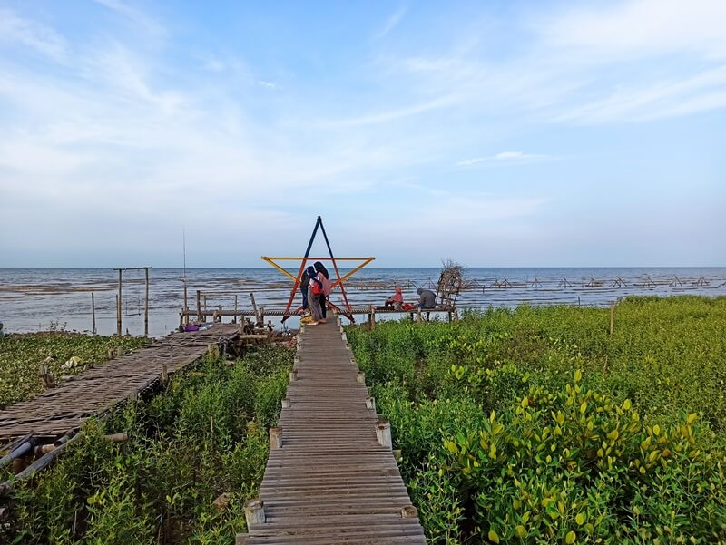
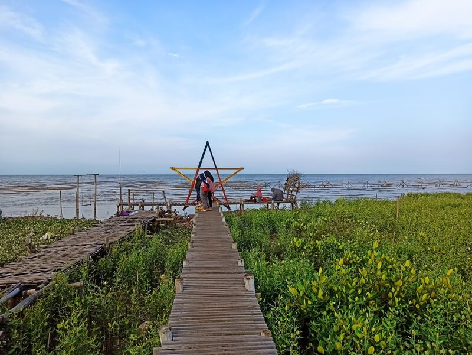

Pantai Kertomulyo merupakan salah satu objek wisata yang ada di Desa Kertomulyo, Pati, Provinsi Jawa Tengah. Pantai ini ramai dikunjungi wisatawan apalagi saat libur tiba.
Meski namanya Pantai Kertomulyo, nyatanya hutan mangrovelah yang menjadi daya tarik utamanya. Deretan tanaman Mangrove menghiasi kawasan Pantai Kertomulyo.
FYI, Pantai Kertomulyo pernah menyabet gelar juara tingkat Provinsi Jawa Tengah loh. Dengan Inovasi Ecowisata Mangrovenya pada tahun 2021 kemarin. Dan sejak awal pembukaan hingga saat ini menjadi salah satu destinasi wisata hits dan favorit di kalangan pencinta wisata bahari.
So, inilah deskripsi Pantai Kertomulyo Pati, sebagai bahan referensi wisata kamu di akhir pekan bersama orang-orang tersayang.
Keunggulan destinasi wisata ini adalah deretan tanaman mangrove yang melingkar sepanjang pantai didampingi jalan setapak dari papan yang ditata rapi aman dan nyaman. Ada 2 jenis tanaman mangrove di Pantai Kertommulyo, Avicenia officialis dan Rhizophora.
Untuk memberikan kenyamanan bagi wisatawan yang datang telah dibangun lokasi kuliner kerakyatan secara sederhana. Sementara untuk fasilitas MCK juga telah tersedia.
Lokawisata Pantai Kertomulyo dikelola oleh Kelompok Sadar Wisata Desa Kertomulyo "Tresno Segoro"
Selain sebagai obyek wisata, pantai ini adalah tempat konservasi tanaman mangove. Banyak ditemukan tanaman mangrove tumbuh lebat maupun yang baru ditanam.
Disamping itu perlu diketahui, bahwa Inovasi Pantai Kertomulyo menjadi Juara satu Tingkat Jawa Tengah.
Lokasi wisata Pantai Kertomulyo ini berada di Desa Kertomulyo, Kecamatan Trangkil, Kabupaten pati, Jawa Tengah.
 
